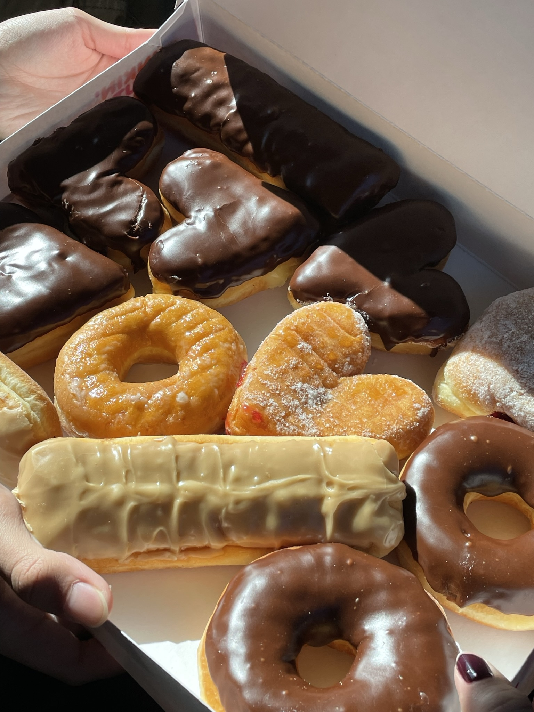
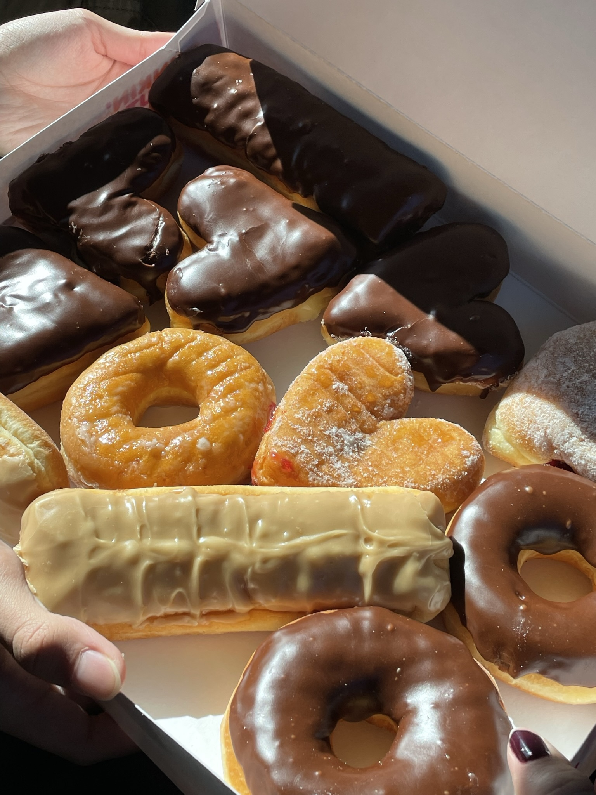
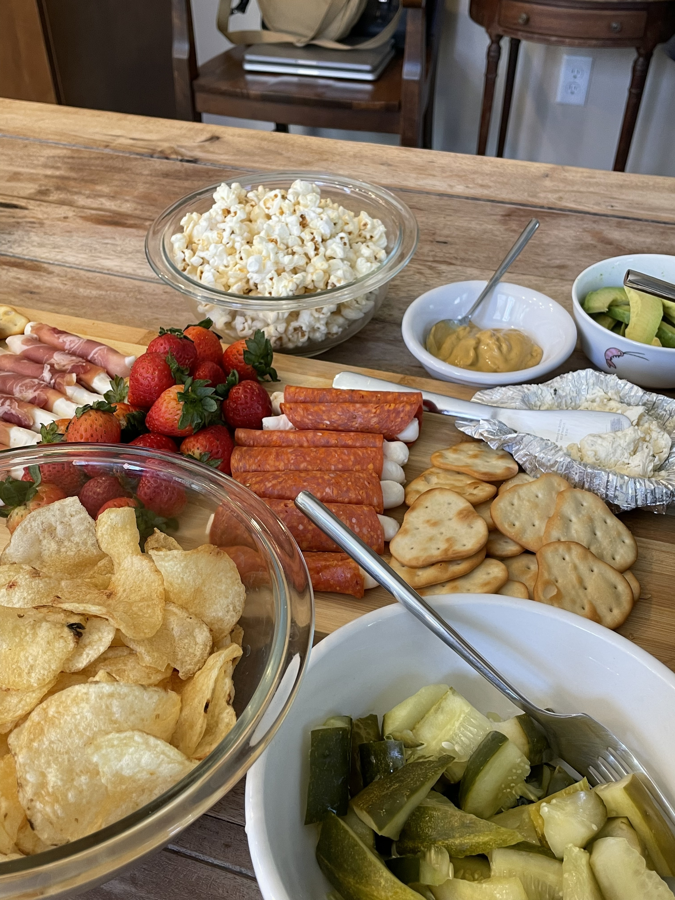
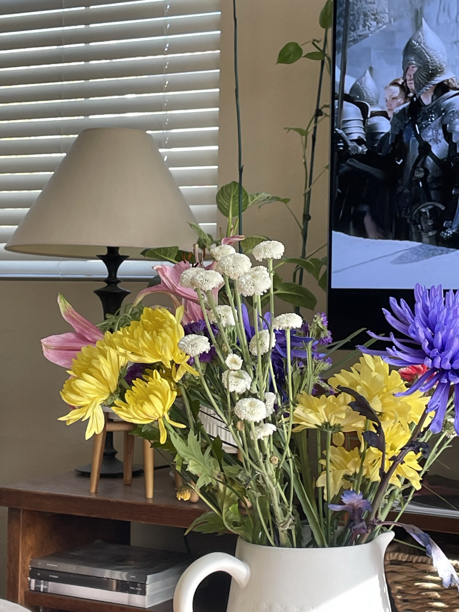
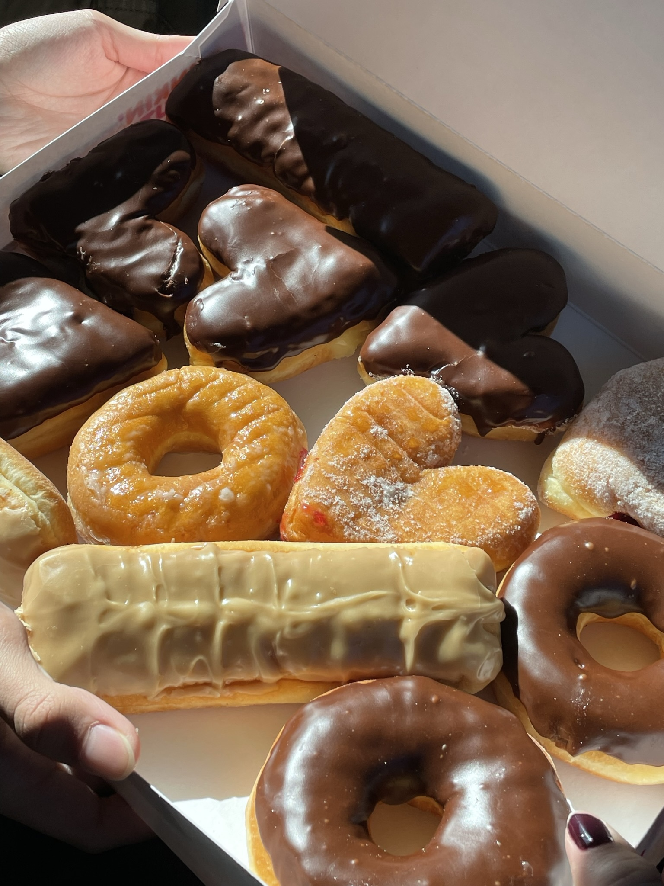
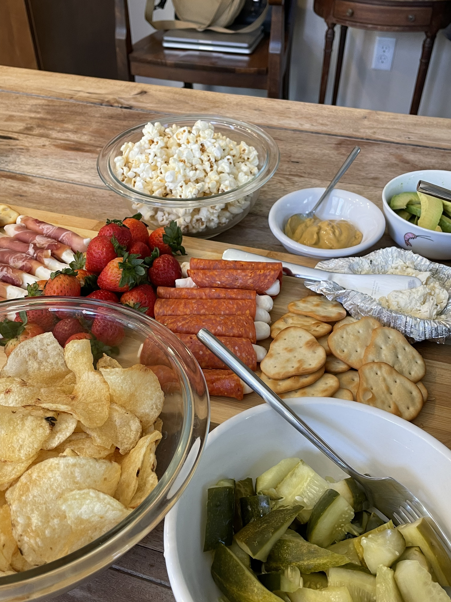
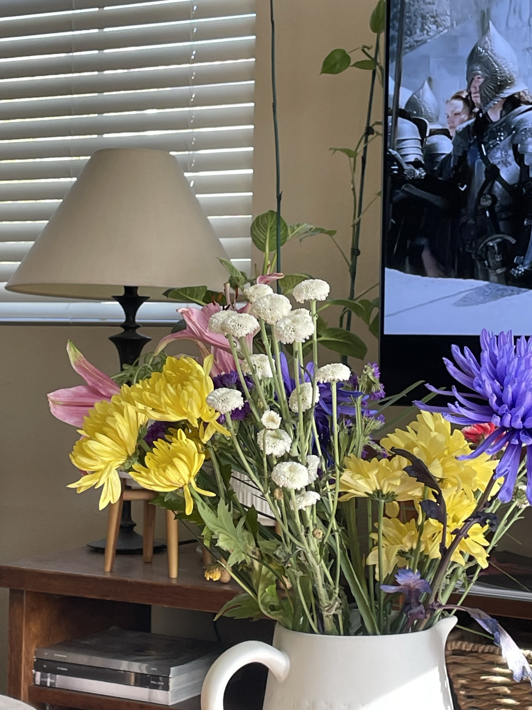
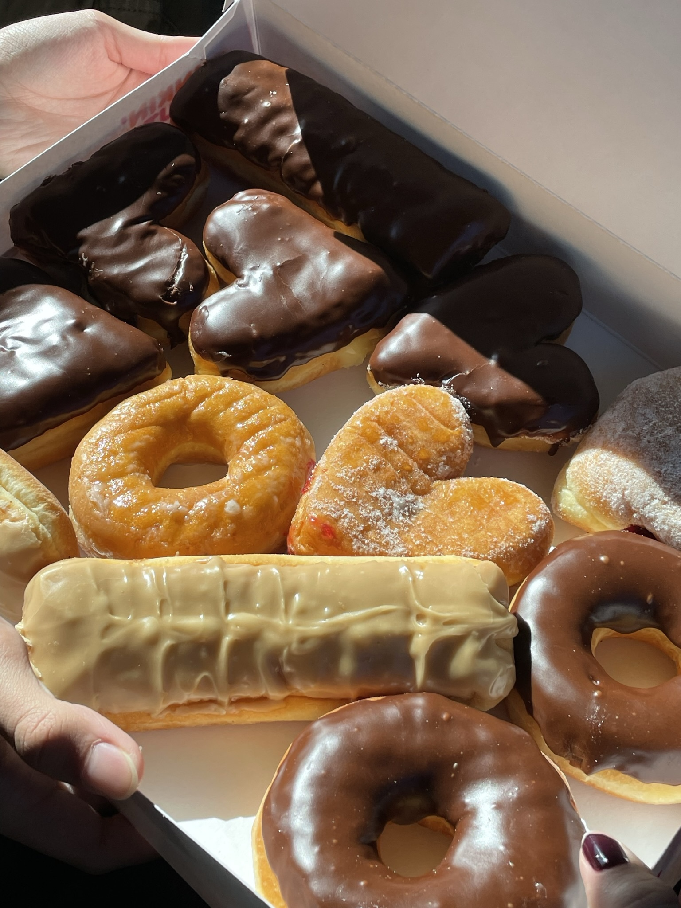

Portfolio
 



 
My name is Riley Robes and I am currently majoring in pre-business at UCR. I plan on concentrating in marketing in the future. I aspire to work on the business marketing side of the fashion industry. Fashion is a big hobby of mine and I feel I would enjoy working in the industry with my knowledge in business marketing. Being at UCR has allowed me to get the best education for business. This school has so many opportunities for me and I’m excited to put them into use. I have made so many connections with new peers that have similar interests with me. Since networking is important for business, I hope to find opportunities through these peers and potentially work with some in the future.
As a kid I always had fun upcycling clothes and making new pieces out of clothes I didn't wear anymore. It started by simply cropping shirts, cutting fringe or holes in shirts, or distressing jeans. But as I continued my hobby in upcycling, I learned to sew and advanced my skills and creativity in fashion. It stayed as a passion of mine throughout my life and I looked forward to pursuing a career in the fashion industry in the future. However, as I grew older, I realized I had more strengths thinking on the business side of fashion. I love being creative, but my logical and analytical side has always been stronger. With that said, I chose to major in business in college because I thought it would be a realistic choice if I wanted to get into the fashion industry in the future somehow. Now I am at University of California Riverside, pursuing a pre-business major and plan on concentrating in marketing.
Other hobbies of mine are that I love to dance! Since I could remember I was always dancing. My parents put me in ballet when I was 6 years old and from there, I continued until senior year of highschool. The only reason why I stopped dancing was because I had to leave for college. If there was an available studio nearby I think I would definitely continue to train. But I’m excited to try new styles of dance in college. It’s a fun challenge to see how different I will feel or how “difficult” it will be for me to execute different styles of dance. Because I trained in ballet for 12 years of my life, it’s definitely going to be new and challenging. I also like to thrift clothes. I am very big on helping and saving the environment. I try to slow the damage by thrifting all my clothes. I rarely shop new anymore. 90% of the clothes I own are thrifted. Not only is thrifting better for the environment and more sustainable, but it’s also fun. You find so many unique pieces from the past that are in perfect condition and no one but you will have it. Because I also love fashion and upcycling, it allows me to rework old clothes for a cheap price. I love that every piece of clothing I own has its own story and that I’m continuing the life of that piece.
• Cleaned and set up tables for openings
• SMaximized time by drying dishes efficiently
• Put away tables and chairs
• participated in club events
• attended general meetings
• cast member of this years PACN 34
• took accurate pictures of clothing
• provided accurate descrptions on each item listed and included measurements and flaws
• packaged and shipped items
